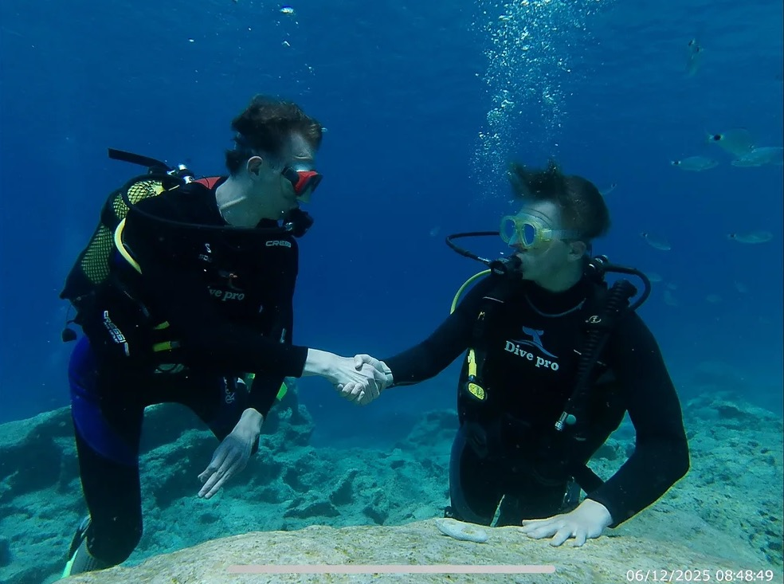
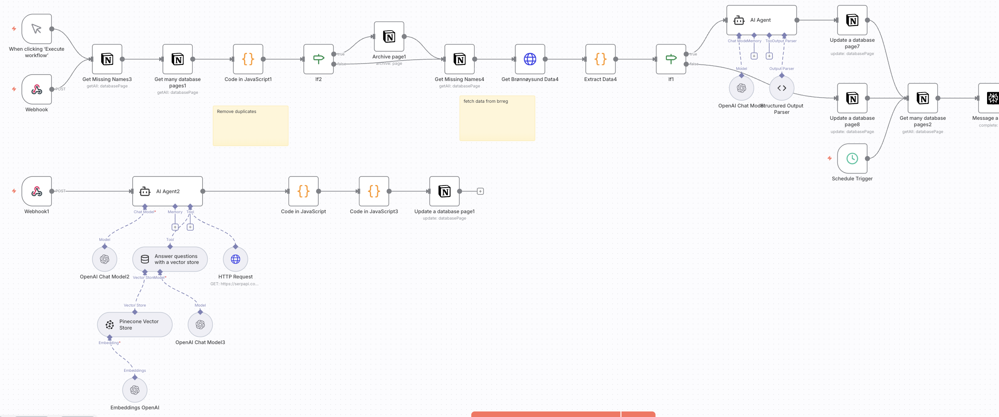
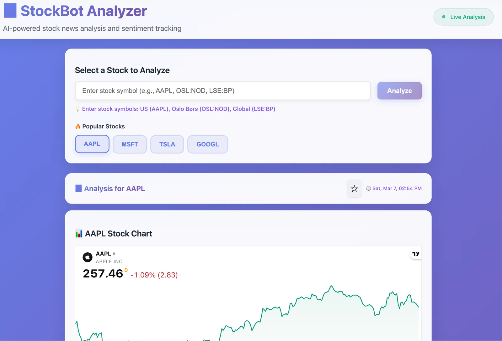
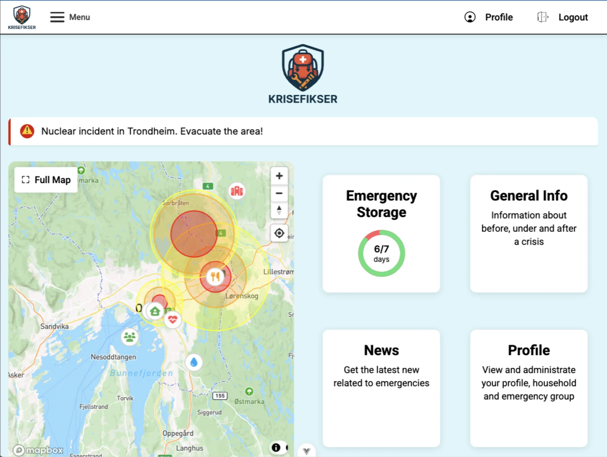
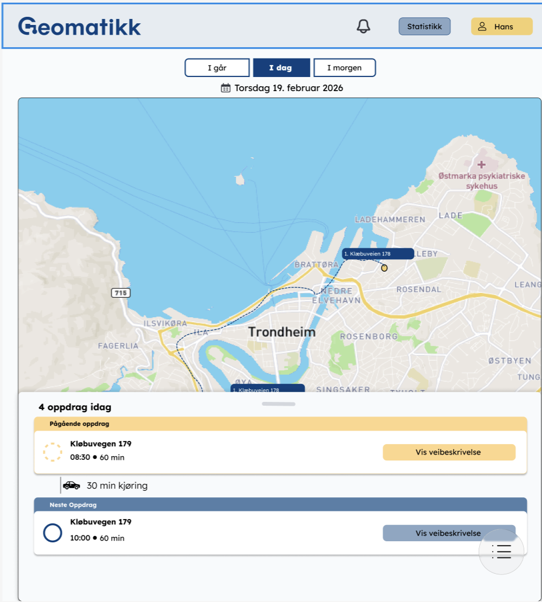
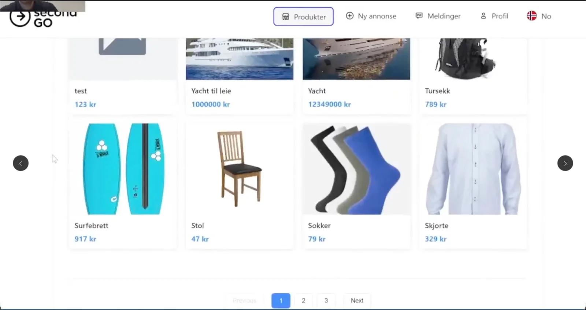

Programmeringsspråk
- Java
- JavaScript
- Python
- C++
- Kotlin
Om meg
Jeg er 3. års dataingeniørstudent ved NTNU med erfaring innen fullstack-utvikling, AI-implementering og automatisering. Jeg liker å bygge praktiske løsninger som skaper verdi, og trives med ansvar, samarbeid og komplekse oppgaver.
Tiltrer sommerjobb som systemutvikler i Sticos sommeren 2026

Om meg
Jeg er dataingeniørstudent ved NTNU med spesialisering i systemutvikling. Jeg har erfaring med Java, Spring Boot, Vue.js, Python og AI-baserte arbeidsflyter, både fra teamprosjekter og praksisnære leveranser.
Jeg trives best når jeg kan kombinere teknologi, struktur og problemløsning for å lage løsninger som faktisk blir tatt i bruk. I prosjekter tar jeg gjerne ansvar, jobber strukturert, lærer raskt og samarbeider tett med andre for å få fremdrift og kvalitet.
Teknologier og ferdigheter
Prosjekter
Bygget automasjonsflyter i self-hosted n8n for å validere leads og vurdere hvilke selskaper som passer for EIC Accelerator og andre EU-finansieringsprogrammer. Sitat fra sjefen: "Sammen med vår nye praktikant Emil har vi hatt svært god fremgang, og vi kan potensielt redusere tidsbruken for å finne kvalifiserte leads med opptil 80 %."


AI-drevet nyhetsanalyse og sentimentsporing for aksjer, bygget som solo-prosjekt med oppfølging fra Yobr AS.

Fullstack teamprosjekt med Spring Boot og Vue.js, med fokus på robust funksjonalitet og brukervennlig arbeidsflyt.

Utvikler en webapp som skal effektivisere arbeidshverdagen til feltteknikere.

Markedsplass/finn med mulighet for kjøp, salg av ting, utviklet i team med Spring Boot og Vue.js.
Samarbeidsprosjekt hvor vi utviklet digitale versjoner av Snakes and Ladders og Monopoly i Java med GUI.
JavaFX-applikasjon for visualisering av fraktaler som Sierpinski-triangelet, Julia-transformasjon og Barnsley-bregnen.
Erfaring
September 2025 - nå (frilanser, så fikk jeg tilbud om fast deltid fra februar 2026)
Jobber med AI-automasjon og leadvalidering i n8n, med Notion som database/CRM og integrasjoner mot HubSpot. Har i tillegg tatt initiativ til direkte selskapskontakt og kundedialog, som har ført til sammarbeid.
Sommer 2025
Utviklet StockBot Analyzer, et AI-prosjekt for nyhetsanalyse og sentimentsporing.
06.2025 – 01.2026
Kundebehandler med fokus på strukturert oppfølging og god service.
06.2024 – 08.2024
Flyttemedarbeider med ansvar for effektivt og pålitelig samarbeid i team.
06.2022 – 08.2023
Sommerjobb på vaskeri
06.2019 – 08.2022
Vikar på sykehjem
Utdanning
Bachelor i ingeniørfag, data (2023-2026)
Spesialisering i systemutvikling
Karaktersnitt: 4.4/5
Introduksjon til Kubernetes
Master i elektronisk systemdesign og innovasjon (2022-2023)
Studiespesialisering med realfag
Hva skjer framover
Kontakt
Ta gjerne kontakt dersom du vil samarbeide, høre mer om prosjektene mine eller diskutere muligheter.